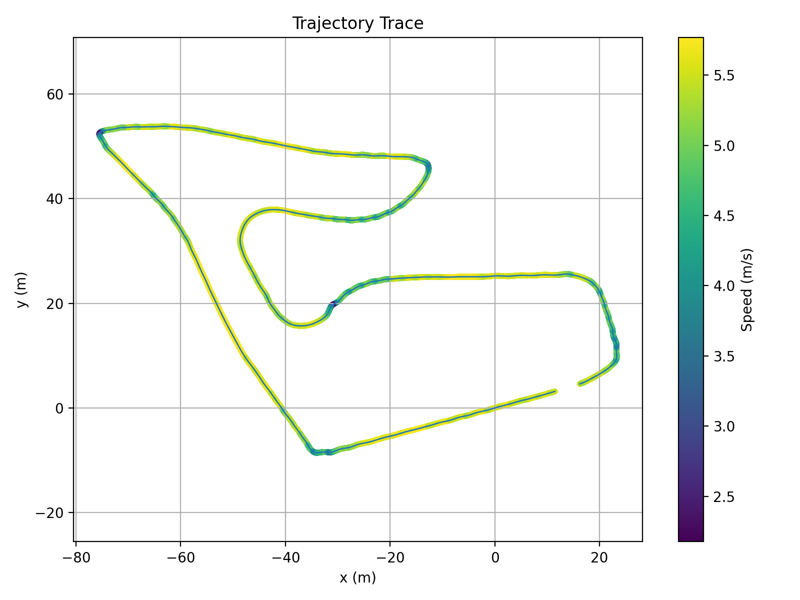
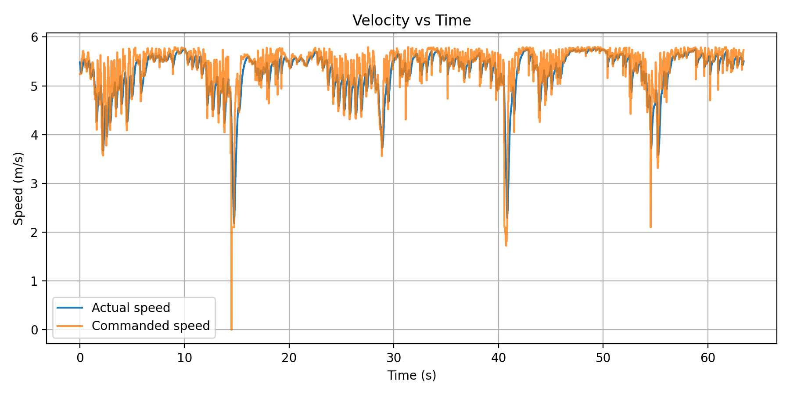
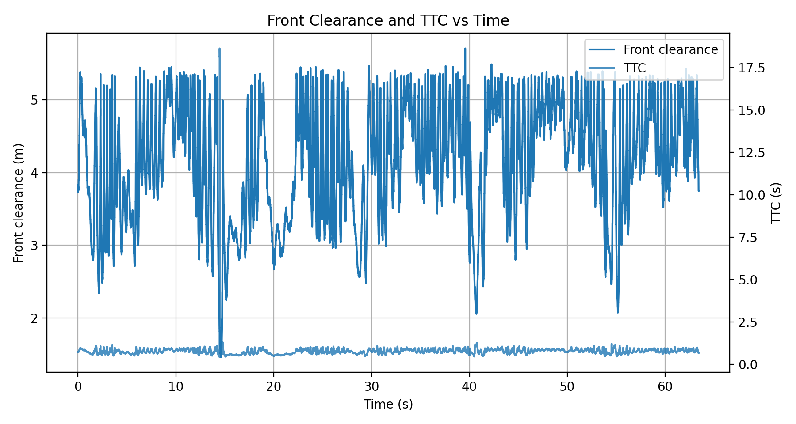
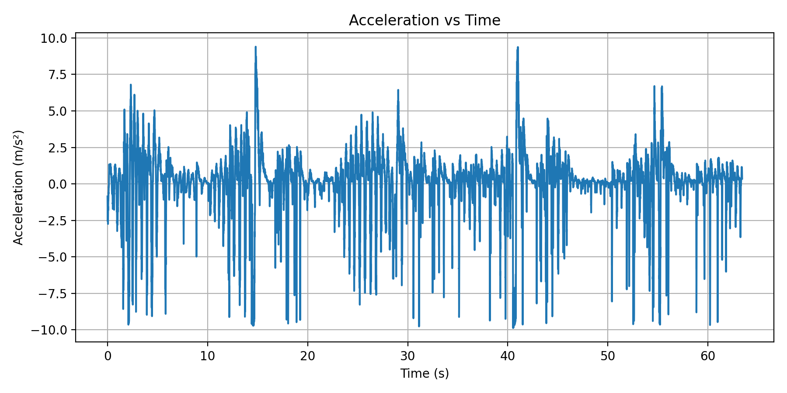

ECE 484 Midpoint · F1TENTH Time Trial
Group Invincible: F1TENTH Time Trial
Designing a fast, reliable, and competition-ready autonomous race car on a stock F1TENTH platform — with a reactive gap controller and a map-based A* + Stanley pipeline, validated in simulation and deployed on hardware.
1University of Illinois Urbana-Champaign · ECE 484 · Spring 2026
We designed and compared two complete autonomous driving strategies for the F1TENTH time trial. The first is a map-free reactive controller — it processes each LiDAR scan in real time to identify the safest open gap and steer toward it, requiring no prior mapping or localization. The second is a map-based pipeline combining A* path planning with cubic B-spline smoothing, physics-aware velocity profiling, and a Stanley lateral controller. Both were validated in the F1TENTH Gym simulator. The reactive approach was then successfully deployed on the physical car with hardware-specific safety adaptations.
Real vehicle Reactive + Map-based Simulation validated Safety + performance
Overview
The F1TENTH time trial requires a fully autonomous stack capable of navigating a closed track as fast as possible without human intervention. We pursued two distinct design strategies. The first — a pure reactive controller — requires no prior map: it identifies the largest free-space gap in each LiDAR scan and steers toward it, relying entirely on real-time sensor data at 25 Hz. The second — a map-based pipeline — builds an occupancy grid, plans a globally optimal collision-free path with A*, smooths it into a continuous trajectory using cubic B-spline interpolation, generates a curvature-aware speed profile from track geometry, and tracks the path using a Stanley controller. Both approaches were fully implemented in ROS 2 and validated in the F1TENTH Gym simulator. For hardware deployment, we selected the reactive approach for its simplicity and zero-infrastructure requirement, adapting it with conservative safety margins, joystick-based enable control, and hardware-specific ROS topic names.
Algorithm Design
We implemented two complete, independent autonomy stacks. Both share the same sensing front-end — a 2D LiDAR scan — but differ fundamentally in how they make driving decisions.
Approach 1 · Reactive Gap Following
A map-free controller that runs entirely on real-time LiDAR data. Each scan is processed to find the largest open gap ahead; steering and speed are commanded directly with no planning, localization, or prior map. The algorithm combines disparity extension (obstacle inflation based on car width), a dynamic safety bubble around the closest point, weighted gap scoring, corridor balance, and opening bias into a single compact control loop running at 25 Hz.
Sensor: LiDAR only · Map required: No · Deployed on: Simulation + Physical Car
Approach 2 · A* + Stanley Controller
A two-node map-based pipeline. An A* planner searches the ROS OccupancyGrid for a collision-free path to a goal pose set in RViz, smooths it with cubic B-spline interpolation, and attaches a physics-aware velocity profile based on local track curvature. A Stanley controller then tracks this path by correcting both heading error and lateral cross-track error simultaneously, with lookahead-based predictive speed control.
Sensor: LiDAR + Map · Map required: Yes · Deployed on: Simulation only
Approach 1 — Reactive Gap Following: Step by Step
LiDAR Preprocessing
Clip all readings to 10 m and replace NaN/Inf values with max range. Apply a 5-beam moving-average kernel to reduce noise spikes. Restrict to a ±100° front field of view, discarding rays that point behind the car.
Obstacle Safety Margins
Disparity Extension: At every depth jump > 0.35 m between adjacent beams, inflate the nearer side by n = ⌈arctan((w + m) / r) / Δθ⌉ beams (w = 0.16 m car half-width, m = 0.18 m safety margin). This prevents the car from targeting gaps it physically cannot fit through.
Safety Bubble: Zero out all beams within a radius of the single closest point. Radius grows with current speed and steering angle, providing greater buffer at higher velocities.
Gap Selection
Find all contiguous beam segments with depth > 1.25 m. Score each segment by: 0.04 × width + 1.0 × mean depth + 0.6 × max depth − 0.8 × |center angle|. Within the best segment, pick a target point biased toward far, forward-facing beams using per-beam scoring. Blend 72% toward best point and 28% toward gap center for the final target angle.
Steering & Speed
Steering: δ = kg·θtarget + kb·balance + bopen, where balance nudges toward the more open side of the corridor and opening bias anticipates upcoming turns. Output is rate-limited to 0.12 rad/cycle and low-pass filtered (α = 0.55) for smooth commands.
Speed: v = vmin + (vmax − vmin)(0.45·fstraight + 0.55·fopen) − 1.8|δ| − 0.7|θtarget|. Hard stop if front clearance < 0.6 m or TTC < 0.42 s.
Approach 2 — A* + Stanley Controller: Step by Step
A* Path Search
Operates on the ROS OccupancyGrid published by SLAM. Uses 8-directional movement with an 8-cell safety padding around all occupied cells. Cost function: g-score is Euclidean distance traveled; heuristic is Euclidean distance to goal. Planning is triggered by a goal pose clicked in RViz.
Path Smoothing
The raw A* waypoint sequence has grid-aligned staircase artifacts. A cubic B-spline (scipy splprep, k = 3, s = 0.5) is fitted to the waypoints and re-sampled at 3× the original density. This produces a smooth, continuous reference curve suitable for a path-tracking controller.
Velocity Profiling
Menger curvature κ = 4A / (a·b·c) is computed from each consecutive triple of waypoints, where A is the triangle area and a, b, c are side lengths. Physics-based speed limit: v = √(μ·g·R), with μ = 0.8 (tire friction) and g = 9.81 m/s². Speed is clamped to 1.5–6.0 m/s. Each waypoint’s target speed is embedded in the Z coordinate of the ROS path message.
Stanley Tracking
Steering: δ = θe + arctan(k·ect / (v + ks)), where θe is heading error and ect is signed cross-track error measured at the front axle. k = 2.5 scales dynamically with speed: kdyn = k × (1 + 0.2v). Speed control previews 15 waypoints ahead — curvature > 0.35: 1.5 m/s; > 0.15: 2.0 m/s; else: 3.2 m/s.
Simulation → Real Car
For hardware deployment we chose the reactive gap controller — it requires no map, no localization infrastructure, and no goal pose. The same core algorithm runs on the physical car with five targeted adaptations:
1. ROS Interface — Topic names changed from simulator paths (/ego_racecar/scan, /ego_racecar/drive) to hardware paths (/scan, /ackermann_cmd).
2. Joystick Safety Enable — The controller activates only while the operator holds the Y button on the joystick. On release, steering resets to zero to prevent a jerky restart.
3. Odometry-Free TTC — The physical car had unreliable odometry, so time-to-collision is estimated using a fixed conservative floor speed (0.10 m/s) instead of /odom feedback. This decouples the safety check from odometry quality entirely.
4. Conservative Speed Limits — Maximum speed reduced from 3.8 m/s (simulation) to 1.5 m/s. Emergency brake distance and TTC threshold were both tightened for hardware safety.
5. Scan-Driven Loop — Replaced the 25 Hz timer-based control loop with a per-scan callback so every incoming LiDAR message directly triggers a control output, eliminating one source of latency.
| Parameter | Simulation | Real Car |
|---|---|---|
| LiDAR topic | /ego_racecar/scan |
/scan |
| Drive topic | /ego_racecar/drive |
/ackermann_cmd |
| Odometry | /ego_racecar/odom (for TTC) |
Not used — fixed floor speed |
| Enable control | Always active | Y button held on joystick |
| Control trigger | 25 Hz timer | Per-scan callback |
| Max speed | 3.8 m/s | 1.5 m/s |
| Min speed | 1.1 m/s | 0.8 m/s |
| Emergency brake distance | 0.60 m | 0.70 m |
| TTC threshold | 0.42 s | 0.50 s |
Demo Video
Reactive gap controller navigating the F1TENTH simulator track — base simulation setup.
Results & Evaluation
Both approaches completed a full lap in simulation with no wall contact and 100% track coverage. The key trade-off is lap time versus planning overhead: A* + Stanley posts a faster raw lap but requires over a minute of pre-run planning; the reactive controller is slower on track but starts instantly with no map or goal setup.
| Metric | Reactive Gap Following | A* + Stanley |
|---|---|---|
| Lap time | 64 s | 58 s |
| Planning / thinking time | 0 s (reactive, no map) | 62 s (A* search + smoothing) |
| Wall contact | None | None |
| Track completion | 100% | 100% |
A* + Stanley Controller — Run Analysis
The plot below is extracted from a rosbag recording of the A* + Stanley pipeline executing a single planned path segment in simulation.

Left — Trajectory (color = speed): The A* planner computed a smooth curved path from the start pose (red circle, origin) to the goal pose (blue triangle, ~3.5 m ahead). The Stanley controller tracked it with no visible deviation — the trajectory trace is a clean single line throughout. Speed is color-coded: the car starts from rest (dark purple), accelerates through the curve, and reaches a cruise speed of ~1.0–1.1 m/s (yellow-green) by the midpoint of the path.
Right — Speed Profile: Speed is plotted against rosbag message index. The car ramps up sharply to ~1.0 m/s within the first ~50 messages, holds a steady cruise for approximately 200 messages while tracking the path, then drops to zero when the Stanley controller detects arrival at the final waypoint. The remaining ~1500 messages record the car at rest after goal completion. The clean ramp-and-hold profile confirms that the lookahead-based speed control produces smooth, predictable longitudinal behavior with no overshoot.
Reactive Gap Following — Run Analysis
The following plots are recorded from a single simulation lap (run 20260419_131930).

Trajectory Trace — The car’s path is color-coded by speed. Yellow and green segments (5–5.5+ m/s) dominate the straights, while blue and purple sections (2.5–3.5 m/s) appear at all major corners. The tight, consistent trace shows the reactive controller produces a repeatable path that naturally hugs the racing line without any explicit path planning.

Velocity vs Time — Commanded and actual speed track each other almost perfectly throughout the 64-second run. The car holds ~5.5 m/s on straights and dips to 2–3 m/s at five to six corners, matching the speed-scheduling formula that reduces speed with steering angle and target gap angle. The tight commanded-vs-actual overlap confirms the low-level drive interface follows commands faithfully.

Front Clearance and TTC vs Time — Front clearance (left axis) oscillates between 2 and 5 m throughout the run, reflecting the gap controller actively seeking open space. The TTC (right axis) remains consistently low but never drops below the emergency threshold — the controller never triggered a hard stop. This confirms that the disparity extension and dynamic bubble margins provided sufficient obstacle safety throughout.

Acceleration vs Time — The reactive controller produces high-frequency acceleration changes, with peak magnitudes within ±10 m/s². This is characteristic of a scan-driven reactive approach: speed is recomputed every LiDAR scan and responds immediately to changing gap geometry. The bursts of high deceleration correspond to the corner entry events visible in the velocity plot.
Future Improvements
With both simulation pipelines validated and the reactive controller running on hardware, the team’s next steps focus on closing the performance gap between simulation and competition:
- Deploy A* + Stanley on hardware — the map-based pipeline is currently simulation-only; deploying it requires integrating Google Cartographer SLAM for real-time occupancy grid mapping and vehicle localization on the physical car.
- Increase real-car speed — the current 1.5 m/s hardware cap is well below the 3.8 m/s achieved in simulation; incremental speed increases paired with re-tuned safety thresholds are planned.
- Dynamic bubble scaling — at higher speeds, the fixed bubble radius is insufficient; a look-ahead distance scaling with v² is under consideration for better high-speed safety.
- Curvature-aware speed on reactive controller — apply the same Menger curvature velocity profiling from the A* pipeline to the reactive controller so cornering speed is physically consistent even without a global path.
- Lap time optimization — fine-tune steering blend coefficients and gap scoring weights specifically for the competition track geometry once the track layout is finalized.
Project Resources
Codebase Implementation and website repository: project-site-invincible_proj
Demo Media Current simulation demo: YouTube Demo
What to Add Next Race images, lap-time tables, steering smoothness plots, ROS graph snapshots, and real-car test footage.
BibTeX
@article{invincibleproj,
title = {invincible_proj: Autonomous F1TENTH Time Trial Racing},
author = {Zhenyu Zhang and Yuanzhe Wang and Murphy Huang},
year = {2026},
}